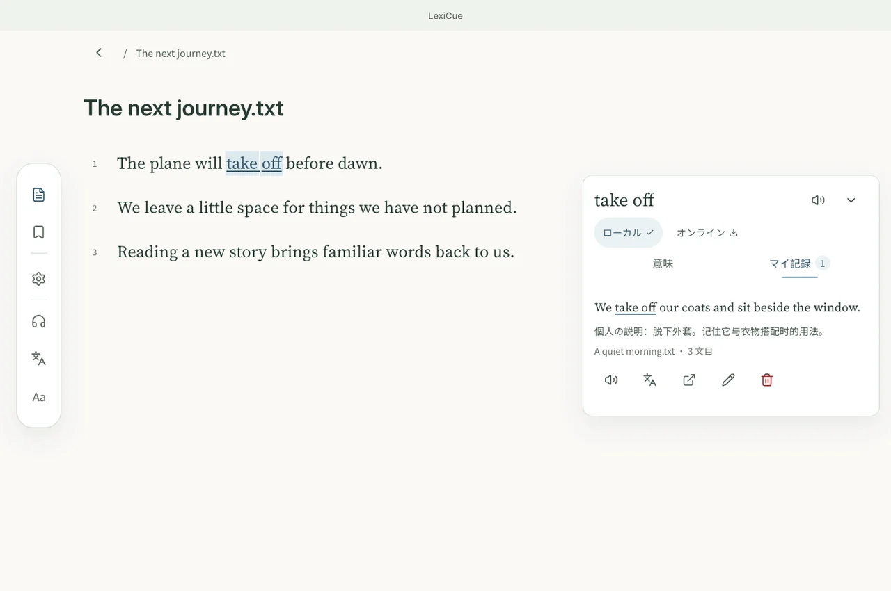
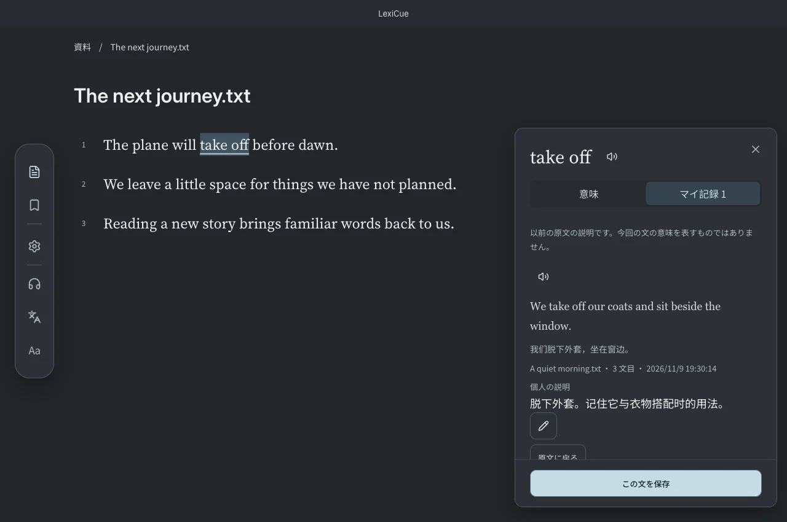

再会して振り返る
新しい出会いから、以前保存した文を思い出します。
このページの目次
保存済みの表現に再会する
保存した表現が後の読書で一致すると強調されます。過去の記録で原文、訳、意味、メモを確認します。これは以前の文脈であり、新しい文の意味とは限りません。



続け方を選ぶ
以前と今の用法を比べ、メモを直したり過去の出典へ戻ったりできます。現在の読書に期限付きカードや評価手順はなく、以前の復習記録は履歴に残ります。
新しい出会いから、以前保存した文を思い出します。
保存した表現が後の読書で一致すると強調されます。過去の記録で原文、訳、意味、メモを確認します。これは以前の文脈であり、新しい文の意味とは限りません。


以前と今の用法を比べ、メモを直したり過去の出典へ戻ったりできます。現在の読書に期限付きカードや評価手順はなく、以前の復習記録は履歴に残ります。